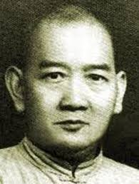
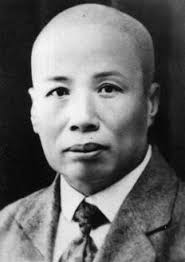

Lo stile HUNG-GAR è uno dei principali stili della scuola "esterna" (WAI-CHAIA). Insieme al CHOY-LEY-FUT e al WING-CHUN, rappresenta il trio più sistemantico e perfetto degli stili originali di SHAOLIN. Oggi sono tutti d'accordo nell'etichettare l'HUNG-GAR come lo stile degli "eroi", tanto che sembra che in passato molti eroi popolari cinesi fossero per la maggior parte praticanti di HUNG-GAR.
WONG FEI HUNG
Uno dei padri dello stile Hung-Gar
Secondo le notizie storiche più attendibili, colui che codificò questo stile fu HUNG-GHEE-GUMG, il più alto allievo di Shaolin. Fin da ragazzo fu interessato al Kung Fu pur essendo un semplice mercante di tè. Un giorno mentre si trovava nei pressi di CANTON per fini commerciali, dovette menare le mani con alcuni nobili del governo CHING che lo costrinsero a rifugiarsi nel tempio di SIU-LAM (Shaolin nel dialetto del sud). Chiese dunque al monaco KAM-HAH di essere accettato come discepolo non rasato.
LAM SAI WING
Uno dei migliori esperti dello stile Hung-Gar del suo tempo